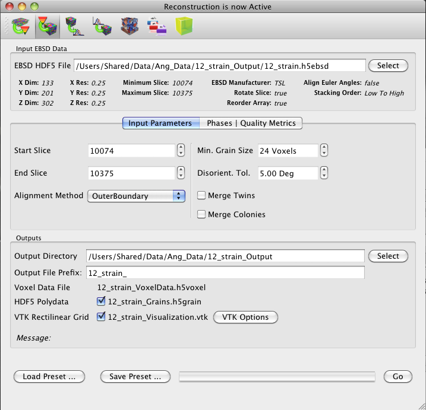

Reconstruction

- EBSD HDF5 File - This is the name and location of the .h5ebsd file you wish to reconstruct
- The x, y and z dimensions and resolutions along with the minimum and maximum slice numbers will be automatically displayed.
- Additionally, the EBSD manufacturer and array manipulation and stacking order preferences will be automatically displayed.
- Input Parameters - These are all the options that can be set to control the reconstruction
- Start Slice and End Slice - This defines the range of sections you wish to reconstruct. The user can choose to only import a subset of the entire dataset, you can choose to not reconstruct everything you imported.
- Alignment Method - This allows the user to choose the method used to align neighboring sections. Outer Boundary simply tries to align the area identified as sample on each section. Minimum Disorientation moves the sections until there is a minimum value of disorientation between all voxels in one section and the voxel directly above it in the next section. Mutual information segments each section independently and then performs a mutual information analysis on the grain ids.
- Min Grain Size - This a clean-up filter that can be set to merge grains below a defined size after grains have been formed. The voxels of the removed grains are reset to unassigned and then the region is filled in by a local grain growth algorithm.
- Disorient. Tol. - This is the orientation difference tolerance allowed between neighboring voxels before they are declared to belong to different grains. Neighboring voxels with misorientations lower than the tolerance are joined during a burn algorithm.
- Merge Twins - This is an option that will indentify neighboring grains that have a twin relationship (3,5,9) and merge them together. Effectively, this is a second burn algorithm (performed on the identified grains, rather than the individual voxels) using the specific twin misorientations as a joining criterion rather than the misorientation tolerance used for forming the grains.
- Merge Colonies - This is an option that is similar to the Merge Twins option, but will reconstruct prior beta grains in an alpha-beta titanium microstructure. It will first identify grains (which would be alpha colonies in a transformed beta microstructure) and then perform a burn algorithm on neighboring grains/colonies, using the specific misorientations between alpha variants from the same beta grain as the joining criterion.
- Phase Types - These are required descriptors to classify the ÔtypeÕ of phase each phase in the EBSD scan. These classifications are used when moving the data to the Synthetic Builder, but are not critical to the reconstruction itself only the statistics calculations.
- Quality Metric Filters These are filters that are applied to the input data that determines which voxels are "Good" and which voxels are "Bad". For a voxel to be considered a "Good" voxel every filter must evaluate to true.
- Output Directories and Files
Output Directory - location that all output files will be written to.
Output File Prefix - this option allows the user to define a prefix to place
on the output data files (which have a fixed basename). The full names of the files will
update in real-time on the list of output files.
- Voxel Data File - This file holds the voxel representation of the reconstructed
volume where the volume is an N x M x Z array of values where each value is a grain id value. This
file will automatically be written to disk.
- HDF5 Polydata File - This file holds a polydata representation of the voxel
volume where each voxel is described by a cube of 8 xyz positions and the line
segment connecting them. This file format can be viewed in ParaView if the appropriate
plugin is used.
- VTK Rectilinear Grid - This file is a Vtk legacy file that can
be optionally written as a binary (Faster loading and saving) or as ASCII (Slow reading and writing).
In addition to the grain ids several other voxel attributes can be written to the
legacy vtk file. Clicking the "VTK Options" button will show those options to the
user.
- Load/Save Preset this allows the user to save input settings or load previously saved input settings